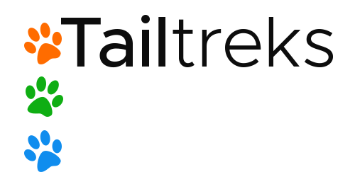
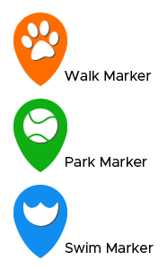
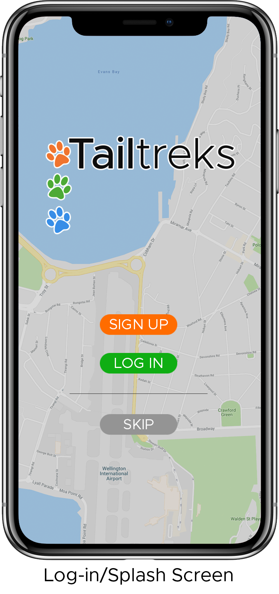
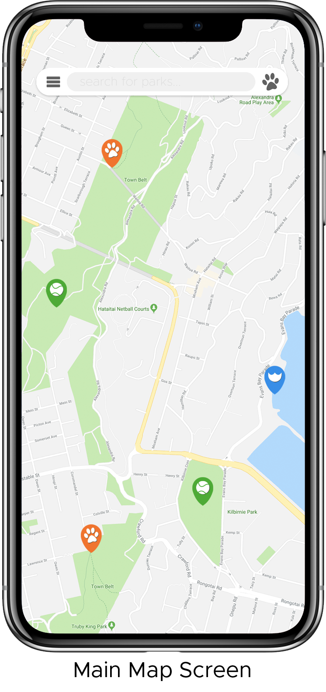
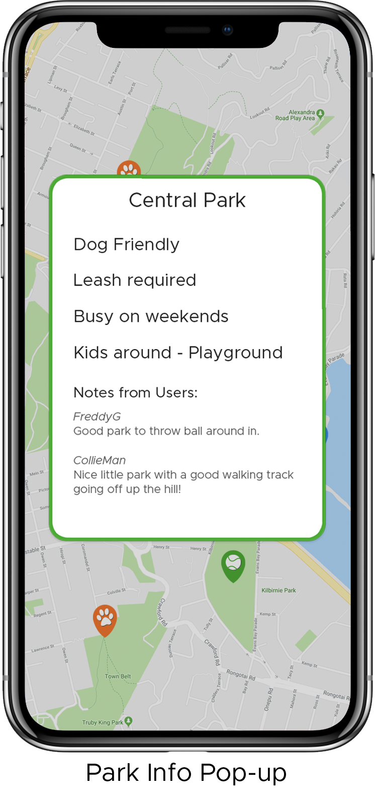
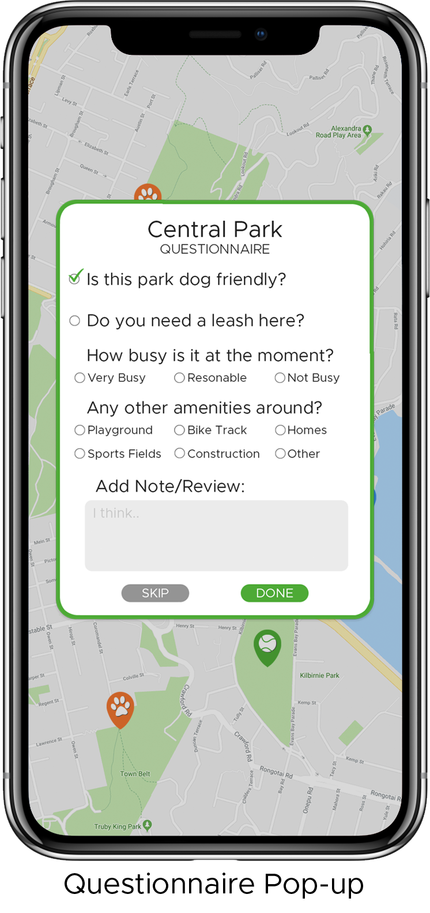

ABOUT
Tailtreks aims to help you find great parks and tracks for you and you're furry friends. Available on any device through our web app, find detailed information on the best places to take your dogs and areas to stay away from via the clean and easy to use interface. Whether you're out of town trying to navigate a new city or looking for fresh places to go at home, Tailtreks with help you find the best spots to walk your dogs no matter where you are.
TECHNICAL CONSIDERATIONS
Tailtreks will be built as a web app so that it can be used on as many devices as possible. It will utilise the Google Maps API to accurately locate parks and tracks in the area, users can then add reviews, notes or fill out quick questionnaires to add further information to each place so that we can deliver necessary information in an easily accessible web-app.
As it will be built as a web app it will use HTML5, CSS3 and JavaScript components. The Maps API allows for full customization of the map; labels and points of interest can be turned on or off, all the colours can be changed and custom markers can be used so it can be fully tuned to the design language of the tailtreks web app.

DESIGN
I would like to keep the design elements simple and fun, using rounded edges keeps the look friendly and the three main bright colours keeps the design uncluttered and undistracting but still fun.
The main font-face will be Metropolis, a geometric, modern and simple sans-serif font, it is flexible having many different weights and is very readable.
FEATURES
Tailtreks shows the local area found through Google Maps, all markers and labels except for road and park labels, will be removed to keep the map cleaner and to remove uneccessary info. Tailtreks will then add in it's own markers for parks, walking tracks and swimming areas that are suitable for dogs. Users can click on any of the markers and a pop-up will appear with further information on that point. When visiting a park, track or swim spot for the first time a questioannaire will pop-up so that we can gather some more info on each place to make the service as accurate as possible. The search bar at the top can be used to find certain parks, tracks, parks in areas etc.



